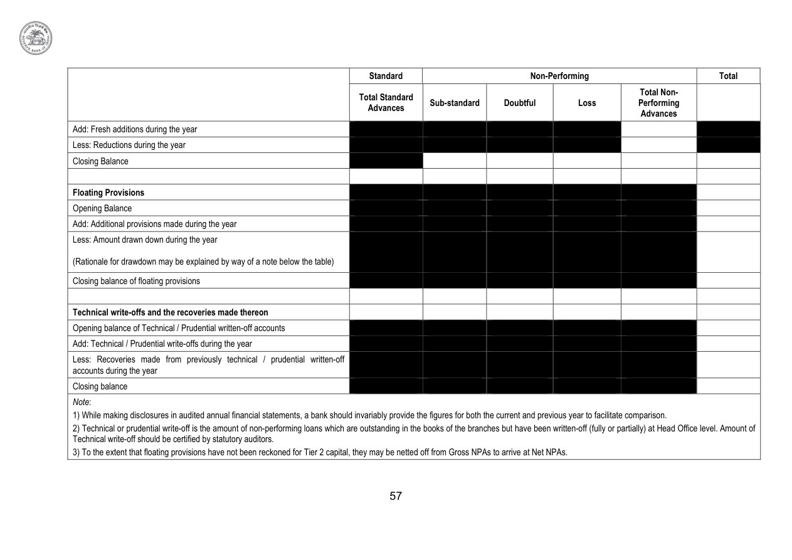

57
Standard
Non-Performing
Total
Non-Performing
Total
Total Standard
Advances
Sub-standard
Doubtful
Loss
Sub-standard
Doubtful
Loss
Total Non-
Performing
Performing
Advances
Add: Fresh additions during the year
Less: Reductions during the year
Closing Balance
Floating Provisions
Opening Balance
Add: Additional provisions made during the year
Less: Amount drawn down during the year
(Rationale for drawdown may be explained by way of a note below the table)
Closing balance of floating provisions
Technical write-offs and the recoveries made thereon
Opening balance of Technical / Prudential written-off accounts
Add: Technical / Prudential write-offs during the year
Less: Recoveries made from previously technical / prudential written-off
accounts during the year
accounts during the year
Closing balance
Note:
1) While making disclosures in audited annual financial statements, a bank should invariably provide the figures for both the current and previous year to facilitate comparison.
2) Technical or prudential write-off is the amount of non-performing loans which are outstanding in the books of the branches but have been written-off (fully or partially) at Head Office level. Amount of
Technical write-off should be certified by statutory auditors.
3) To the extent that floating provisions have not been reckoned for Tier 2 capital, they may be netted off from Gross NPAs to arrive at Net NPAs.
1) While making disclosures in audited annual financial statements, a bank should invariably provide the figures for both the current and previous year to facilitate comparison.
2) Technical or prudential write-off is the amount of non-performing loans which are outstanding in the books of the branches but have been written-off (fully or partially) at Head Office level. Amount of
Technical write-off should be certified by statutory auditors.
3) To the extent that floating provisions have not been reckoned for Tier 2 capital, they may be netted off from Gross NPAs to arrive at Net NPAs.